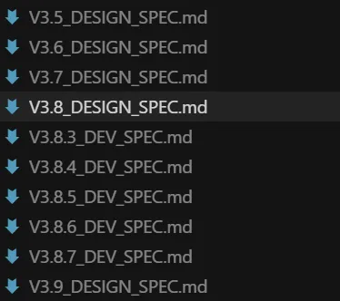
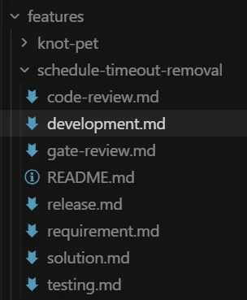
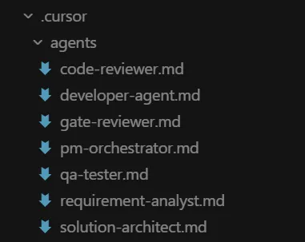
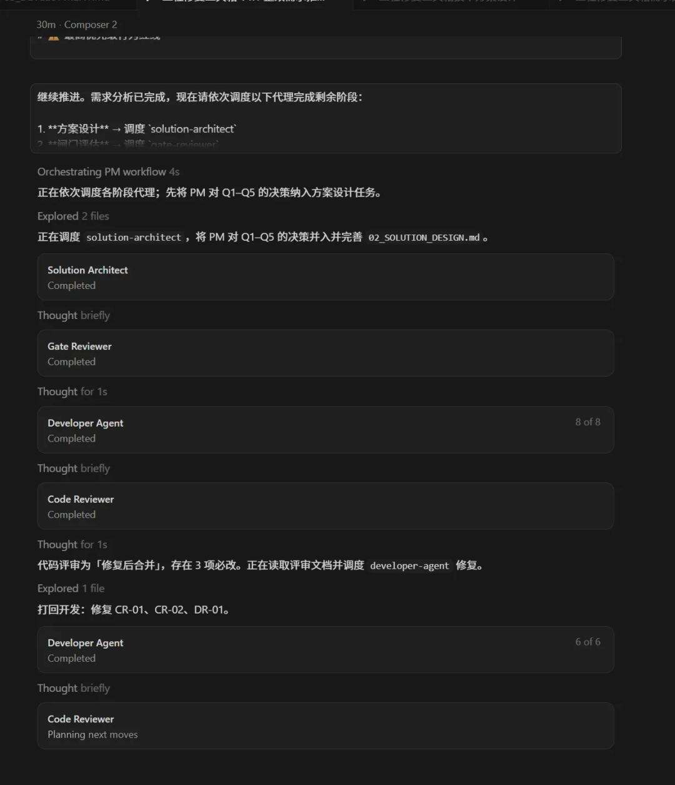
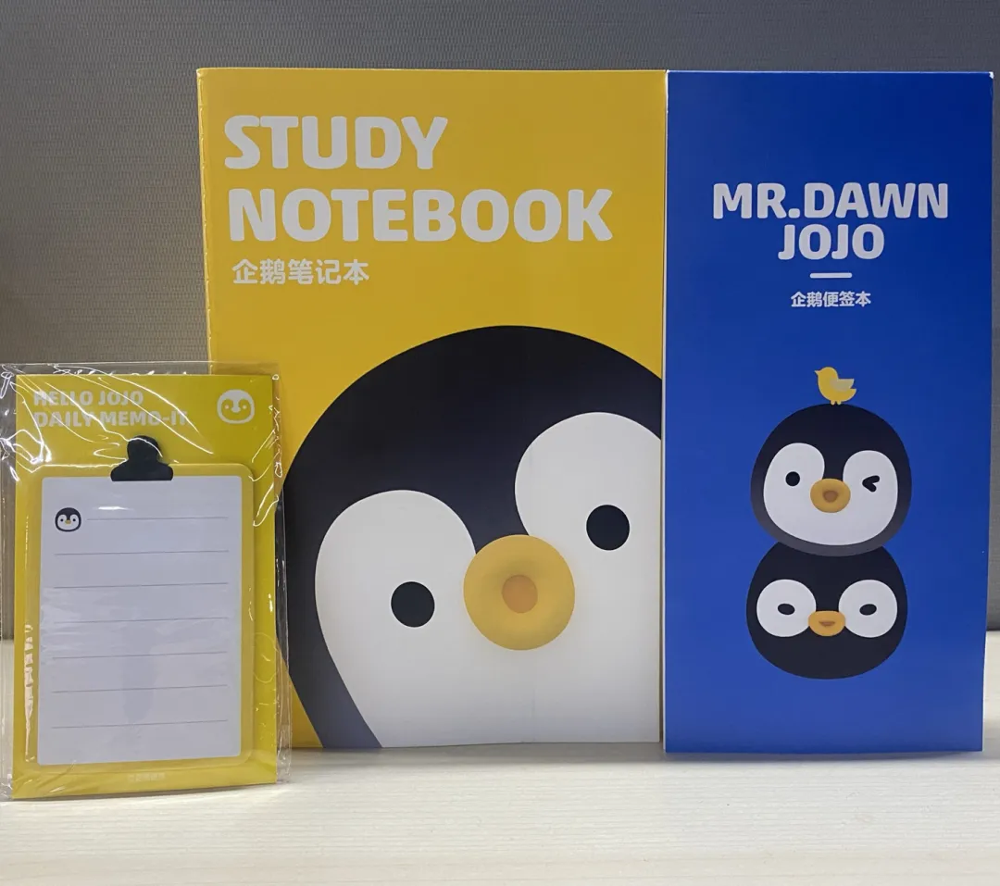
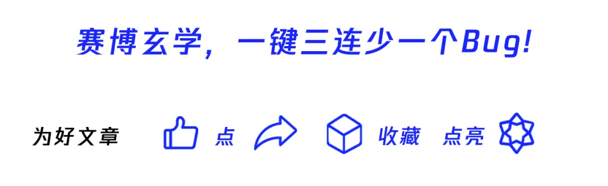

Harness Engineering 实战：JK Launcher 从 Prompt 到 Context 到 Harness 三次跃迁 + 五类问题分类法
来源：微信公众号 归档日期：2026-05-11 抓取状态：成功 原文字符：21767｜配图：12 张
摘要速览
一个游戏客户端工程师（非后端/前端出身）如何借助 AI 独立交付跨技术栈产品，以及 Harness Engineering 的实战落地全貌——不是理论，是 12 个大版本迭代后总结的血泪经验。
核心内容
一、三个时代对比
| 维度 | Prompt 时代 | Context 时代 | Harness 时代 |
|---|---|---|---|
| 人怎么指挥 AI | 一句话描述任务 | 喂设计文档 + 代码上下文 | 搭建环境 + 编写规则 + 构建反馈闭环 |
| AI 出错怎么办 | 重新写 Prompt | 补充更多上下文 | 分析缺失的护栏，编码为自动检查 |
| 知识在哪里 | 人脑 + 聊天记录 | 设计文档 | 仓库里的规则文件 + 自动化脚本 + 基线数据 |
| 质量怎么保证 | 人工肉眼 Review | 编译 + 测试 | 声明式规则 + 自动化验证 + 修复闭环 |
| 可复现性 | 极低 | 中等 | 高（新 Agent 按规则自治） |
| 人的角色 | 写代码的辅助 | 写文档的架构师 | 设计环境的系统工程师 |
核心原则（OpenAI 原文）："When something failed, the fix was almost never 'try harder.'" 解法不是"再跑一次"，而是"缺了什么护栏？怎么让 Agent 看得懂、绕不过？"
二、JK Launcher 案例（WPF .NET 4.8 Unity 项目管理工具）
- V3.0~V3.3（Prompt 时代）：一问一答从零开始，每次重交背景，风格不一致，版本多了失控
- V3.4~V3.8（Context 时代）：V3.5 写 1000 行设计文档（功能/UI 布局/本地化键值/测试清单），出活质量上台阶；但 AI 照样写 C# 8.0 语法、忘加日志前缀、文档会过时
- V3.9～（Harness 时代）：
.cursor/rules/声明式规则文件（AI 每次启动加载）.cursor/skills/封装重复操作（msbuild-compile / mstest-run / post-verify）verify_all.ps1事后自动检查（18条规则，12条有检查项）.cursor/agents/7个角色流水线作业（PM / 需求分析 / 代码生成 / 代码审查 / Gate Reviewer / 规范检查 / PM Coordinator）verification_baseline.json量化基线（测试数量 369，只升不降）
三、事后验证系统设计原则
- 覆盖率高但不贪全：不能自动化的（如 Dispatcher 线程模型）靠声明式规则做事前预防
- 误报率低：跳过注释行、排除合法 fallback 文件、排除已用本地化函数的行
- 修复闭环硬：Error 级别必须修完，不许删测试绕过、不许改验证脚本
- 基线只升不降：测试数量记录在 baseline，自动拦截退步
- 历史记录追加：
verification_history.log追加，可看趋势
四、五类问题分类法（AI 翻车时先判断层次）
| 层次 | 问题性质 | 改进手段 | 改进频率 |
|---|---|---|---|
| 编码细节 | 写错了（MessageBox.Show / C# 8.0 / XAML 中文） | Rule + Script 检查 | 高频，几乎每周加 |
| 操作步骤 | 忘了做（忘编译/不知道 MSBuild 路径） | Skill 封装 | 中频，稳定后不动 |
| 角色交互 | 流程乱了（Gate Reviewer 自己审自己的需求） | SubAgent 定义调整 | 低频，但影响面大 |
| 外部能力 | 碰不到（内网 iWiki 文档/外部系统状态） | MCP 集成 | 按需，碰到才加 |
| 系统架构 | 整个环节缺了（最初没有事后验证环节） | 新增 Harness 组件 | 极低频，但每次质变 |
五、关键洞察：预防 vs 兜底双层防线
- 只有 Rule（预防）会失效：上下文一深，Rule 会被"淡忘"
- 加 Script（兜底）才靠谱：犯了错一定能抓到，不依赖 AI 是否记得规则
- 例：XAML 中文问题→ Rule 讲"为什么不能用中文" + verify_all.ps1 扫描所有 XAML，Error 级别不让过
六、人的角色转变
| 以前 | 现在 |
|---|---|
| 写代码 | 设计 Agent 职责边界和输出规范 |
| Review 代码 | 构建自动化检查项 |
| 跑测试 | 定义测试基线和守护策略 |
| 写文档 | 编写规则文件和 Skill 文档 |
| Debug | 分析验证报告，判断是规则缺了还是代码写岔了 |
本质：元工程——不在工程本身加法，而在工程的"运转环境"加法。类比：Harness 之于 AI 开发 = CI/CD 之于团队开发。
"Human taste is captured once, then enforced continuously on every line of code."
可执行启发
（待补充）
我的想法
（待补充）
为什么有用
这是目前看到的最完整的 Harness Engineering 落地实战案例——不是概念讲解，而是从第一行 AI 写的代码到 V3.11 的完整演进记录，包含具体的文件结构、工具链、五类问题分类法、事后验证设计原则。对理解"Rule 为什么会失效""Script 和 Rule 的分工"以及"人在 Harness 时代干什么"都有非常直接的参考价值。
适用 / 不适用场景
- 适用：搭建自己的 Harness 体系时的参考、理解为什么需要自动化验证、判断 AI 翻车时该改哪层
- 不适用：不涉及 LLM 模型选型、不是框架介绍（没有 LangChain / CrewAI 对比）
原文沉淀
目录
- 01
- 1 什么是 Harness Engineering？
- 2 三个时代的显著区别
- 02
- 1 项目背景
- 2 Prompt 时代（V3.0 ~ V3.3）
- 3 Context 时代（V3.4 ~ V3.8）
- 4 Harness 时代（V3.9 至今）
- 03
- 1 多 Agent 协作体系
- 2 PM 怎么控制流程
- 3 Agent 体系的迭代过程
- 重复造轮子：上次明明已经做过类似功能，新任务不知道，又搞了一遍
- 设计走偏：新功能的思路跟已有功能拧着来，架构越做越碎
- 5 实战：怎么启动一次完整的多 Agent 研发
- 04
- 1 为什么这一步如此重要
- 2 三步验证流程
- 3 verify_all.ps1：14 项自动检查
- 4 好的事后验证长什么样
- 05
- 1 不写代码了，但从来没闲着
- 盯着 Agent 在哪里翻车——然后把修复思路变成规则或者检查项
- 定义什么算"对"——把"正确"的标准讲清楚，让机器去盯着执行
- 2 一个真实的反馈循环
- Rule 保留，但精简到只讲"为什么不能用中文"的核心要点
- 严重性设为 Error：检测到就不让过
- 3 人的核心工作：从写代码到写规则
- 06
关注腾讯云开发者，一手技术干货提前解锁👇
先做个自我介绍。我是一名游戏客户端开发工程师，日常工作在 Unity 引擎开发。从去年开始高强度使用 AI 辅助开发，一开始只是让它帮我补补代码、查查 API，后来越用越深入，逐渐突破了自己原有的技术边界——借助 AI 的能力和公司内网提供的工具链，我独立给项目组交付了 WPF 桌面启动器、好几个内部提效的 Web 站点、还有一堆企业微信机器人。这些东西放在以前，对一个纯客户端出身的人来说几乎不可能独自完成。正是这段经历让我对"如何高效驾驭 AI"这件事有了很多切身体会，也是写这篇文章的出发点。
01
从 Prompt 到 Context 再到 Harness：AI 编程的三次跃迁
1 什么是 Harness Engineering？
2026 年 2 月，OpenAI 工程师 Ryan Lopopolo 发了一篇很有分量的文章——Harness engineering: leveraging Codex in an agent-first world。里面披露了一组数据：一个小团队用五个月时间让 Codex 产出了大约 100 万行代码、1500 个 PR，全程零手写代码。这不是实验室里的 demo，是有内部日活用户的真实产品。
OpenAI 管这种工作方式叫 Harness Engineering。Harness 这个词本意是"马具、挽具"——马再好，不套上鞍具它也拉不了车。给 AI Agent 套上合适的 Harness，它才能稳定地干活。
文章里有句话我反复读了好几遍：
“When something failed, the fix was almost never ‘try harder.’ Because the only way to make progress was to get Codex to do the work, human engineers always stepped into the task and asked: ‘what capability is missing, and how do we make it both legible and enforceable for the agent?’ ”
说白了就是：Agent 搞砸的时候，解决办法不是"再跑一次试试"，而是退一步去想"缺了什么护栏？怎么让 Agent 看得懂、绕不过？"
2 三个时代的显著区别
| 维度 | Prompt 时代 | Context 时代 | Harness 时代 |
|---|---|---|---|
| 人怎么指挥 AI | 一句话描述任务 | 喂设计文档 + 代码上下文 | 搭建环境 + 编写规则 + 构建反馈闭环 |
| AI 出错怎么办 | 重新写 Prompt | 补充更多上下文 | 分析缺失的护栏，编码为自动检查 |
| 知识在哪里 | 人脑里、聊天记录中 | 设计文档中 | 仓库里的规则文件、自动化脚本、基线数据 |
| 质量怎么保证 | 人工肉眼 Review | 编译 + 测试 | 声明式规则 + 自动化验证 + 修复闭环 |
| 可复现性 | 极低 | 中等 | 高（新 Agent 能按规则自治） |
| 人的角色 | 写代码的辅助 | 写文档的架构师 | 设计环境的系统工程师 |
OpenAI 文章里的概括我觉得很到位：Humans steer. Agents execute. 人掌舵，Agent 干活。
02
一个真实案例：JK Launcher 的进化之路
1 项目背景
JK Launcher 是我给项目组做的一个 Unity 项目管理工具，用 WPF (.NET Framework 4.8) 写的。它干的事情不复杂但很琐碎——管 SVN 更新、启动 Unity 引擎、替换 Library 缓存、处理冲突、跑定时任务，都是游戏开发团队每天离不开的日常操作。
这个项目从第一行代码开始就是 AI 写的。从 V3.0 到现在的 V3.11，经历了 12 个大版本迭代，是我个人实践 AI 编程方法论的试验田。
2 Prompt 时代（V3.0 ~ V3.3）
最早的做法非常粗暴：
- -
我：帮我写一个 WPF 窗口，左边项目列表，右边详情，有个"更新"按钮调 SVN update。
AI：好的，代码如下...一问一答，每次对话都是从零开始。AI 不知道我们项目有什么规范、用了什么框架、昨天改了什么。
痛点显而易见：
- 每次都得把项目背景重新交代一遍
- AI 经常写出风格不一致的代码——比如它习惯用
MessageBox.Show，而我们封装了 MessageDialog.Show
- 改一个地方不知道会不会把另一个地方搞坏
- 版本少的时候靠记忆还能管，版本一多就彻底失控
3 Context 时代（V3.4 ~ V3.8）

项目复杂了以后，我开始学着写设计文档来引导 AI。V3.5 是个转折点——我第一次正儿八经写了一份 V3.5_DESIGN_SPEC.md，将近 1000 行，把功能描述、解决方案、文件变更列表、UI 布局的 ASCII 示意图、本地化键值表、按钮配色方案、测试清单、风险评估全塞进去了。
效果立竿见影：AI 不用猜我想要什么颜色什么交互，照着文档实现就行，出活质量一下上了台阶。
但新问题跟着来了：
- 文档管得了"做什么"，管不了"怎么做"——AI 照样可能写出 C# 8.0 语法、忘加日志前缀、忘做本地化
- 文档会过时，新版本的对话窗口看不到老版本写过的约定
- 知识散落各处：有些在聊天记录里，有些在文档里，有些只在我脑子里
4 Harness 时代（V3.9 至今）

从 V3.9 开始，我的思路变了。不再只是想"怎么把 Prompt 写得更好"或者"怎么把设计文档写得更全"，而是开始搭系统：
声明式规则（.cursor/rules/）：把编码约束固化成规则文件，AI 每次启动都会加载
技能封装（.cursor/skills/）：把编译、测试之类的重复操作包装成一键可调的"技能"
自动化验证（verify_all.ps1）：改完代码后跑一遍自动检查，看有没有违规
多 Agent 协作（.cursor/agents/）：7 个角色各管各的，流水线作业
基线管理（verification_baseline.json）：量化指标只升不降，测试数量少了立刻报警
关键转变：以前是"告诉 AI 做什么"，现在是"建一个 AI 能自己转起来的环境"。这就是 Harness。
03
搭建 Harness：具体做了什么
1 多 Agent 协作体系

为什么不能只用一个 Agent？
很自然的疑问：一个 AI 全干了不行吗，为什么要拆成七个？
道理其实和现实中的软件工程一样——同一个人既写需求又写设计又写代码又审自己的代码，盲区一定很大。AI 也一样。我在第一版用单 Agent 做的时候踩过这些坑：
| 问题 | 具体表现 |
|---|---|
| 自我确认 | 写代码的 Agent 不会主动推翻自己的设计，"我设计的一定没问题" |
| 上下文过载 | 一个复杂需求涉及十几个文件的改动，全塞进一个上下文里，漏改、改错的概率直线上升 |
| 没有质量门 | 设计有问题也会被一路带进代码里，发现的时候已经写了几百行 |
| 缺少审计 | 出了问题说不清"当时为什么这么定的"，因为所有决策都散落在一次对话里 |
拆成多个 Agent 以后，每个角色只管一类事，互相之间通过正式文档交接。写需求的管写需求，审方案的管审方案，写代码的不碰需求文档——职责分离本身就是一种质量保障。
七个 Agent 各自干什么
| Agent | 模型 | 干什么 | 为什么用这个模型 |
|---|---|---|---|
| PM Orchestrator | composer-2 | 流程总控：协调各阶段、拍板前进还是回退 | 调度逻辑不需要写代码，轻量模型就够 |
| Requirement Analyst | composer-2 | 需求分析：拆解多义性、对比候选方案、定验收标准 | 纯文本分析，不碰代码 |
| Solution Architect | composer-2 | 方案设计：模块划分、接口定义、风险预判 | 偏文档输出，不写实现 |
| Gate Reviewer | composer-2 | 闸门评估：开发前做 8 个维度的审查 | 审查模板化，固定输出格式 |
| Developer Agent | claude-4.6-opus-high-thinking | 写代码：按方案落地、编译自检 | 唯一需要真刀真枪写代码的角色 ，必须上最强模型 |
| Code Reviewer | gpt-5.4-medium | 代码评审：找逻辑漏洞、查需求遗漏、看设计偏离 | 要深度理解代码但不需要自己写 |
| QA Tester | composer-2 | 测试验证：设计用例、分类缺陷、维护测试工程 | 测试用例偏文档，测试代码本身不复杂 |
光看这张表可能觉得"不就是分了个工嘛"。但每个角色存在的意义，得结合实际跑出来的结果才能体会到。我用之前做 Galileo 共享库抽取时的真实经历来说明——那个需求要从 1687 行的伽利略遥测服务中抽出一个独立 DLL，涉及三个工程的联动改动，是一次完整的七阶段实战：
Requirement Analyst 不只是把设计稿翻译成需求列表，它会真的去读源码做交叉比对。那次它发现设计稿里压根没提到一个问题：Logs 和 Metrics 用的 OTLP 属性键名不一致（一个叫 server，另一个叫 service.name）。如果没有这个阶段，这个不一致会被带进新 DLL 的 API 设计，后面要改就麻烦了。
Solution Architect 做的最关键的一个决策是：ScreenCount（走 GetSystemMetrics）可以放进 DLL，但 ScreenResolution/DPI（走 WPF 的 SystemParameters）不能，因为 DLL 不允许依赖 WPF。这种"哪些能带走、哪些必须留下"的判断，单凭一个写代码的 Agent 是做不好的——它的本能是"把所有功能都搬过去"。
Gate Reviewer 是我认为性价比最高的环节。它不信任前面 Agent 的结论，会自己打开文件验证。那次它发现方案设计的迁移清单里少列了一个文件（LauncherConfigModels.cs）——如果直接开工，V3 迁移完以后编译会直接挂。一个 Agent、一份文档，拦住了一次"设计时没想到→开发时编译不过→花两小时排查"的返工。
Developer Agent 只管按方案落地。它不做设计决策，拿着明确的 API 签名、文件列表、编码约定，按部就班地实现。给它一份清晰的规格，出活质量远好于让它"自由发挥"。
Code Reviewer 以"外人"视角看代码，抓到了 Developer 自己不会注意到的问题：ProjectGuid 重复（会导致 VS 解决方案加载异常）、GalileoSpan.Dispose 里缺 try-catch（违反 NFR-04 稳定性要求）。自己审自己的代码，这种问题永远发现不了。
QA Tester 跑了 12 项检查清单，其中最重要的一项是搜索确认没有残留的旧命名空间引用——这种"搜索型验证"人工很容易遗漏。
PM Orchestrator 全程做的是一件事：看每个阶段的结论，决定能不能往下走。闸门说"有条件通过"，它就确认条件能不能接受；评审说"1 个 Major 必改"，它就把开发退回去改完再来。到最后收拢各阶段结论，给出"可以上线"的最终判定。
每个 Agent 都抓到了前面 Agent 没抓到的东西。这就是流水线的价值——不是 7 倍工作量，而是 7 层过滤网。
模型选择的成本考量
只有 Developer Agent 用最贵的模型（claude-4.6-opus-high-thinking）。其余 6 个全用 composer-2，因为它们本质上在做文档处理而不是代码生成。Code Reviewer 用的是 gpt-5.4-medium，介于两者之间——它需要深度理解代码但不需要自己写。光模型选择这一项就省了不少 token 开销。
2 PM 怎么控制流程
PM Orchestrator 是整套体系的指挥中心，它跑的是一个状态机：
- - -
[需求分析] → [方案设计] → [闸门评估] → [开发实现] → [代码评审] → [测试验证] → [交付]
↓ ↓ ↓
回退到需求/方案 回退到开发 回退到开发几条硬规矩：
- 闸门有阻塞项 → 不许开工，必须回退
- 评审有必改项 → 不许进测试，必须回退
- 测试有阻塞缺陷 → 回退到开发修
- 同一阶段连续回退 3 次 → 停下来跟用户汇报，建议重审需求
每个 Agent 的输出不是聊天消息，而是落地的文档，按固定目录结构存放：
- - - - - - -
docs/features/SchedulePostUpdateBehavior/
├── 01_REQUIREMENT_ANALYSIS.md ← 需求分析
├── 02_SOLUTION_DESIGN.md ← 方案设计
├── 03_GATE_REVIEW.md ← 闸门评估
├── 04_DEVELOPMENT.md ← 开发记录
├── 05_CODE_REVIEW.md ← 代码评审
└── 06_TEST_REPORT.md ← 测试报告OpenAI 文章里讲的 "Repository knowledge is the system of record"——仓库里的知识才是唯一的真相源头——我们在这里算是做到了。
3 Agent 体系的迭代过程
从第一版起就是 7 个 Agent，这个骨架没动过。但光定义角色远远不够，真正费劲的是把角色之间的交互规则理清楚。
第一版的致命问题：没人管"不通过怎么办"
第一版的最大坑是：文档里没写某个环节不通过时该怎么办。
结果呢？
- Gate Reviewer 审出方案有漏洞——然后它自己把需求文档改了，改完自己再审一遍，过了。标准的"既当运动员又当裁判"。
- Code Reviewer 发现代码有 bug——然后它自己把代码改了，改完自己再 review 一遍，也过了。修复质量可想而知，经常改出新 bug。
问题的根子在于：每个 Agent 只知道自己的活儿，不知道"出了问题球该传给谁"。
迭代一：定义回退路由
最关键的一次改动——给 PM 加上了完整的回退规则：
- - - - - -
闸门评估不通过 → PM 拍板 → 退回需求分析（需求问题）或方案设计（方案问题）
Gate Reviewer 绝不能自己改需求改方案
代码评审不通过 → PM 拍板 → 退回开发（代码问题）或方案设计（设计跑偏）
Code Reviewer 绝不能自己改代码
测试不通过 → PM 拍板 → 退回开发（代码缺陷）或需求分析（需求漏了）
QA Tester 绝不能自己修 bug核心就一句话：发现问题的人不能自己修。 这跟现实中的软件工程一个道理——测试不该自己改代码。
迭代二：把每个 Agent 的操作流程拆细
第一版的 Agent 定义停留在"你负责做 X"的层面，没说"X 到底包括哪些动作"。导致输出质量很不稳定。
拿 Code Reviewer 举例，第一版只要求"审查代码、给合并建议"。现在要求覆盖这些维度：
| 审查维度 | 具体做什么 | 第一版有吗？ |
|---|---|---|
| 逻辑正确性 | 边界条件、异常处理、并发问题 | 有（但粗） |
| 需求实现 Review | 拿着 requirement.md 逐条对照，检查是否漏实现了 | 没有 |
| 性能 Review | 找 N+1 查询、内存泄露、不必要的大对象 | 没有 |
| UI Review | 看 XAML 布局合不合理、主题兼容性、按钮好不好点 | 没有 |
| 安全性 | 输入校验、权限检查 | 有 |
| 方案一致性 | 实现有没有偏离 solution.md | 有 |
新增的"需求实现 Review"解决了一个顽疾：Developer Agent 经常把主流程写完了，但需求文档里提到的某个边界场景给漏了。现在 Code Reviewer 会拿着需求文档一条一条核对，想漏都难。
其他 Agent 也做了类似细化：
- Requirement Analyst：碰到有歧义的表述（比如"去掉这个功能"），必须列出至少两种解读（彻底删除 vs 改成可配置），让用户拍板
- Gate Reviewer：新增了"开发过程高概率疑问点"——提前预判开发阶段会卡在哪里
- Developer Agent：编译不过禁止往下走，不准带着编译错误进评审
- QA Tester：不只是写用例了，还要负责维护可执行的自动化测试项目
迭代三：PM 项目级任务看板
这是一个不起眼但实际影响很大的改进。注意，这里说的不是单个任务内部的追踪——每个任务自己的流程文档天然就在管这事——而是项目级别的历史任务索引。
为什么需要这个？因为 AI 没有记忆。一个项目持续开发下来，历史任务堆了一大堆，但每次新开一轮对话，AI 什么都不知道。没有项目看板的时候，每个新需求都在从零开始分析，两个问题躲不掉：
重复造轮子：上次明明已经做过类似功能，新任务不知道，又搞了一遍
设计走偏：新功能的思路跟已有功能拧着来，架构越做越碎
举个实际的例子。我们的"定时更新"功能之前已经做完了基础流程——定时触发、SVN 更新、状态通知。现在我想在这个基础上加一个"超时中断"的能力。如果没有看板，Requirement Analyst 对"定时更新"一无所知，大概率会设计出一套跟现有实现不兼容的方案。有了看板以后，Requirement Analyst 会先搜"定时更新"相关的历史任务：
- - - - - - -
## 项目任务看板（摘录）
| 任务ID | 任务名称 | 状态 | 文档路径 |
|---|---|---|---|
| T-012 | 定时更新基础功能 | 已完成 | docs/features/ScheduleUpdate/ |
| T-015 | 定时更新后自动打开 Unity | 已完成 | docs/features/SchedulePostUpdate/ |
| T-023 | 定时更新超时中断 | 进行中 | docs/features/ScheduleTimeout/ |找到 T-012 和 T-015，把历史文档拉出来看一遍——现有的状态机怎么设计的、之前做过什么技术决策、哪些坑踩过了——这些上下文直接输入到新需求的分析里。新功能就是在已有地基上加层楼，而不是在旁边另起一栋。
说白了，项目看板给了 AI 一种跨会话的"记忆"。每次新对话启动，PM 读一遍看板就能重建项目全貌，不用每次都问"之前做过什么来着？"
4 Rules vs Skills vs Scripts：从全是 Rules 到三层分离
这套三层架构不是预先规划的，是被现实问题一步步逼出来的。
一开始：所有东西都是 Rules
项目早期没有 Scripts，也没有 Skills。编码规范、流程要求、检查清单，统统写成 Rules（.mdc 文件），全部设为 alwaysApply: true，AI 每次启动都加载。
比如：
- "XAML 里禁止出现中文"——50 行 Rule，带正确和错误示例
- "禁止用 MessageBox.Show"——30 行 Rule，附替代方案
- "SVN 命令必须带认证参数"——90 行 Rule，各种命令模板都列全了
- "测试数量只增不减"——写在测试规范的 Rule 里
加起来 14 条 always-applied 规则，1000 多行。
问题来了：任务一长 AI 就开始"忘事"
这套方案在小任务上没问题。但任务一复杂——比如一个需求改十几个文件，经过好几轮评审和修复——AI 开始频繁踩雷：
- 改了 15 个文件，第 13 个里面冒出来一个 MessageBox.Show
- SVN 命令丢了 --username
- XAML 里写了中文
Rule 里全都明明白白写着呢，但 AI 就是没照做。
原因其实不难理解——注意力衰减。1000 多行 Rules 占着上下文窗口的前排位置，但随着对话越来越长、代码改来改去、评审意见一轮接一轮，AI 的注意力自然而然地往最近的内容上聚焦。那些最早塞进去的 Rules 慢慢就被"挤"出了核心注意范围。这不是 AI 的 bug，Transformer 架构在长上下文下就是这个特性。
破局：能用机器查的就别靠 AI 记
想明白这一层以后，思路就清晰了。很多 Rules 本质上是可以用机器自动检测的。"XAML 不能有中文"——一行正则就搞定了，根本不需要 AI 去"记住"。
于是我做了一波迁移：
| 原来的 Rule | 迁到脚本检查项 | 能迁的原因 |
|---|---|---|
| XAML 禁止中文 (50 行) | verify_all.ps1 A.1（rg 正则扫描） | 纯模式匹配 |
| 禁止 MessageBox.Show (30 行) | verify_all.ps1 A.4（rg 扫描） | 关键字匹配 |
| C# 8.0+ 语法禁止 (134 行) | verify_all.ps1 A.3（4 种模式匹配） | 语法特征明确 |
| SVN 需认证参数 (92 行) | verify_all.ps1 A.8（rg 扫描） | 检查参数有没有 |
| 测试数量不减少 (~30 行) | verify_all.ps1 B.3（数值对比） | 纯数值比较 |
迁完以后，这些 Rule 从动辄 50-134 行精简到 15-25 行（只留核心要点让 AI 理解"为什么"），并且从"永远加载"改成"按需加载"。always-applied 规则从 14 条降到 4 条，总行数从 1010 行砍到 275 行。
三层怎么串起来
光有脚本不行——谁来触发它？AI 怎么知道什么时候该跑脚本？ 这就需要流程 Rule 和 Skill 配合了：
| 层 | 是什么 | 干什么 | 实例 |
|---|---|---|---|
| 流程 Rule | build-after-changes.mdc | 告诉 AI"每次改完代码必须跑三步验证" | alwaysApply: true ，确保流程不被跳过 |
| Skill | post-verify/SKILL.md + .bat | 告诉 AI"怎么跑验证：执行这个脚本，看这个输出文件" | Agent 读了 SKILL.md 就知道怎么操作 |
| Script | verify_all.ps1 | 跑 14 项自动检查，吐出 PASS/WARN/FAIL 报告 | Agent 不用管检查细节，看结果就行 |
三层的关系：流程 Rule 保证 AI 不会忘记要验证（解决注意力衰减的问题），Skill 告诉 AI 验证怎么操作（封装步骤），Script 执行实际的验证（机械化检测）。
跟以前比好在哪？ 以前在 Rule 里写"不要用 MessageBox.Show"，AI 在长任务里照犯。现在，就算 AI 把这条规则忘得一干二净，verify_all.ps1 的 A.4 检查项还是会逮到它，逼着 AI 改掉了再重新跑验证。而流程 Rule 只有一条（build-after-changes.mdc，不到 90 行），"改完代码要跑验证"这么简单的事 AI 不太可能忘。原来要"记住 14 条细节规则"，现在只要"记住 1 条流程规则"，剩下的全交给机器。
5 实战：怎么启动一次完整的多 Agent 研发
说了这么多架构和迭代，可能会好奇：具体操作的时候到底怎么启动？ 其实不复杂，三步就行。
第一步：准备需求文档
不管是一份正式的设计稿，还是自己整理的 PRD，关键是把"要做什么、约束是什么、大致怎么做"写清楚。不需要很长，但得包含背景目标、功能点、约束条件。比如我们做 Galileo 共享库抽取那次，设计稿大概 287 行，包含了背景目标、接入原则、DLL 设计、V3 和 OutsourceLauncher 各自的接入方式、实施步骤。
第二步：对 PM Agent 发起启动指令
在对话里发这样一段话，@你的需求文档路径：
- - - - - - - - - - - - - - - - - -
现在请以文档驱动方式推进一个完整的软件研发需求闭环。
需求内容：@docs/你的需求文档.md
要求：
1. 自动规划需求目录和阶段文档。
2. 先进行需求分析，再方案设计，再实现前闸门评估。
3. 如果闸门评估未通过，不得进入开发。
4. 通过后再进入开发、Code Review、测试、最终汇总。
5. 每个阶段必须输出应写入文档的正式内容。
6. 每次阶段切换必须形成文档化交接记录。
7. 最终输出是否可上线、阻塞项、遗留风险和下一步建议。
请先输出：
- 当前阶段
- 建议创建/更新的文档
- 第一阶段应交给哪个代理
- 给该代理的任务说明PM 收到后会输出当前阶段、文档清单、第一阶段交给谁（通常是 Requirement Analyst）、以及给它的任务说明。这时候我确认一下没问题，回复"继续"，PM 就会调起第一个 subagent。然后可以看到下方的图，我的PM会很顺利的调度其他agent分别负责不同的事项，遇到问题的时候也能准确的找到合适的agent。

第三步：阶段推进，人做检查点
之后每个阶段走完，PM 会汇报结论并问我"是否进入下一阶段"。我要做的就是：
- 扫一眼阶段文档，确认没有明显跑偏
- 在闸门评估和代码评审这两个关键节点重点看，其他阶段可以泛读
- 如果有问题，告诉 PM 我的意见，它会决定回退到哪个阶段
整个流程下来，每个阶段产出一份文档，PM 负责串联和决策，我负责在关键节点把关。实际跑一轮完整的七阶段，体感大概半小时到一小时（取决于需求规模），比我自己写代码快得多，而且质量有保障——因为每一层都有人（或 Agent）在检查前一层的输出。
轻量流程和完整流程的取舍
不是所有任务都需要跑完七个阶段。我的经验是：
| 任务类型 | 建议流程 | 说明 |
|---|---|---|
| 大需求 / 跨工程改动 | 完整七阶段 | 每一道都别省 |
| 中等需求 / 单工程 | 可省略闸门 | 但代码评审不要省 |
| 小 Bug 修复 | 根因分析 → 开发 → 评审 → 测试 | 需求和方案可以合并成一段话 |
| 十行以内的改动 | 直接改 + 跑验证 | 不需要动 Agent 体系 |
关键原则是流程重量和任务重量匹配。十行的 Bug 修复跑七个阶段是浪费，但跨工程的架构迁移省掉闸门是冒险。
04
事后验证：Harness 的安全网
1 为什么这一步如此重要
OpenAI 原文有句话我觉得讲到了要害：
“We enforce this mechanically. Dedicated linters and CI jobs validate that the knowledge base is up to date, cross-linked, and structured correctly.”
规则写得再多，终归只是"告诉 AI 应该怎么做"。AI 可能看到了但忽略了，可能理解了但写的时候漏了，也可能上下文太长规则被截断了。事后验证是唯一能保证规则真的被执行了的机制。
在我们的实践中，事后验证回答的是一个根本性的问题："这次改完以后，整个系统还是健康的吗？"
2 三步验证流程
- - - - - - - - - -
代码改完
↓
Step 1: 编译（msbuild-compile skill）
↓ 零 Error
Step 2: 测试（mstest-run skill）
↓ 369 个测试全通过，数量不减少
Step 3: 事后验证（post-verify skill）
↓ 14 项检查，0 个 Error
↓
任务完成任何一步挂了 → 修 → 从 Step 1 重来。超过 5 轮还没收敛 → 停下来跟我汇报。
3 verify_all.ps1：14 项自动检查
| 编号 | 检查项 | 严重性 | 怎么检测的 |
|---|---|---|---|
| A.1 | XAML 中文字符 | Error | rg 正则扫描 Unicode 范围 |
| A.2 | XAML Emoji | Error | rg 正则扫描 |
| A.3 | C# 8.0+ 语法 | Error | 4 种模式匹配（??=、using var、await foreach、[1]） |
| A.4 | MessageBox.Show | Error | rg 扫描，排除合法的 fallback 文件 |
| A.5 | 硬编码 UI 文字 | Warning | 检测 StatusMessage 直接赋值中文 |
| A.6 | 日志缺 [Prefix] | Warning | 扫描 Logger 调用中没有 [ 前缀的 |
| A.7 | LastState 直接访问 | Error | 扫描 File.ReadAllText 和 ConfigService.LastState |
| A.8 | SVN 缺认证参数 | Warning | 扫描 SVN 命令中没有 --username 的 |
| A.9 | 文件超 1000 行 | Warning | 统计每个 .cs 文件行数 |
| B.1 | 编译零 Error | Error | 调 MSBuild |
| B.2 | 测试全通过 | Error | 调 vstest.console.exe |
| B.3 | 测试数量 >= 基线 | Error | 跟 verification_baseline.json 对比 |
| C.2 | 规则文件 4 格式同步 | Warning | 检查 .cursor/.codebuddy/.github 下的副本在不在 |
| C.5 | .cs 文件在 .csproj 中 | Error | 对比文件系统和 csproj 里的列表 |
跑一次大概 2 秒（跳过编译测试的话），出一份结构化报告：
- - - - - - - - - - - - - - - - - - - - - - - -
===========================================
Post-Verification Report
Date: 2026-03-27 11:08:11
===========================================
[PASS] A.1 XAML Chinese Characters
[PASS] A.2 XAML Emoji
[PASS] A.3 C# 8.0+ Syntax
[PASS] A.4 MessageBox.Show
[PASS] A.5 Hardcoded UI Text
[PASS] A.6 Log Format
[PASS] A.7 LastState Access
[PASS] A.8 SVN Authentication
[WARN] A.9 File Length Limit 13 violations
[PASS] B.1 Build Success
[PASS] B.2 All Tests Pass
[PASS] B.3 Test Count Guard
[WARN] C.2 Rule File Sync 34 violations
[PASS] C.5 .cs in .csproj
===========================================
Summary: 9 PASS / 2 WARN / 0 FAIL / 3 SKIP
Result: PASSED WITH WARNINGS
===========================================4 好的事后验证长什么样
做了几个月下来，我觉得好的事后验证系统得满足这么几条：
覆盖率要高，但别贪全。 不是所有规则都适合自动化。比如"Dispatcher 的正确使用方式"需要理解运行时线程模型，正则扫描根本不靠谱。我们的策略是：能自动化的全自动化（目前 18 条规则中 12 条有对应检查项），不能自动化的靠声明式规则做事前预防。
误报率要尽量低。 误报多了大家就不信任验证结果了。为了压低误报我们做了不少工作：
- XAML 中文检测：跳过 XML 注释行（<!--）
- MessageBox.Show：排除 MessageDialog.xaml.cs（那是合法的 fallback）
- 硬编码文字：排除已经用了 Loc.Get() 的行
- csproj 同步：通过 verification_baseline.json 的排除名单管理历史遗留
修复闭环得硬。 Error 级别必须修完才能过，不存在"先跳过"。Warning 允许任务继续但必须告诉我有哪些 Warning。修复有约束——不许引入新违规、不许删测试、不许改验证脚本来绕过检查。
基线只升不降。 verification_baseline.json 记着当前测试数量基线（369 个）。这个数字只能往上走。如果 AI 试图通过删测试来"通过"验证，B.3 会立刻拦住。
要有历史记录。 每次跑完自动追加到 verification_history.log，方便回看趋势。
05
人在这个过程中的角色
1 不写代码了，但从来没闲着
在 Harness 体系里，人干的事发生了本质变化：
| 以前干什么 | 现在干什么 |
|---|---|
| 写代码 | 设计 Agent 的职责边界和输出规范 |
| Review 代码 | 构建自动化的检查项 |
| 跑测试 | 定义测试基线和守护策略 |
| 写文档 | 编写规则文件和 Skill 文档 |
| 管进度 | 设计 PM 的状态机和回退规则 |
| Debug | 分析验证报告，判断是规则缺了还是代码写岔了 |
归到底就两件事：
盯着 Agent 在哪里翻车——然后把修复思路变成规则或者检查项
定义什么算"对"——把"正确"的标准讲清楚，让机器去盯着执行
OpenAI 说得好："Human taste is captured once, then enforced continuously on every line of code." 人的品味只需要表达一次，之后每行代码都被自动守护。
2 一个真实的反馈循环
有一回 AI 在 XAML 里写了 Content="设置"。编译通过了，测试也过了，但某些用户的系统字体配置下会显示乱码。
以前怎么办：在 Rule 里加一条"XAML 禁止使用中文字符"。然后看运气——短任务里 AI 通常能遵守，但任务一长、上下文一深，这条 Rule 就可能被"淡忘"，中文又冒出来了。
现在怎么办：
Rule 保留，但精简到只讲"为什么不能用中文"的核心要点
在 verify_all.ps1 里实现 A.1 检查项：用 rg 正则扫描所有 XAML 文件
严重性设为 Error：检测到就不让过
区别在哪？以前 Rule 是"告诉 AI 不要犯错"，本质是预防，但预防会失效。现在 Script 是"犯了错我一定能抓到"，本质是兜底。预防 + 兜底，两层防线才靠得住。
从此以后，不管是哪个 Agent、哪轮对话、上下文有多长，这条规则都是机械化执行的。我的判断只需要表达一次。
3 人的核心工作：从写代码到写规则
仔细想想，Harness 时代人干的事情，本质上是一种元工程——不是在工程本身上做加法，而是在工程的"运转环境"上做加法。
这和传统软件工程里 DevOps 的演进有点像。十年前大家觉得"写代码才是正事，搭 CI/CD 是额外工作"。后来所有人都意识到，CI/CD 才是让团队能稳定交付的基础设施。Harness 对于 AI 开发，就是 CI/CD 对于团队开发——看着像是"额外的活"，实际上是"让所有其他活都靠谱的活"。
具体来说，我现在的日常工作循环是这样的：每次 AI 翻车，我会先判断这个问题属于哪个层面，然后用不同的手段去堵。经过几个月的沉淀，我发现问题基本可以归为五类，每类对应不同的 Harness 改进动作：
第一类：编码规范违反（Rule + Script）
这是最常见的。AI 用了 MessageBox.Show、写了 C# 8.0 语法、XAML 里出现中文——都属于"有明确对错、可以用正则匹配"的问题。处理方式前面 3.4 节已经讲过了：Rule 保留核心要点做事前提醒，Script 做事后兜底检测。这一类问题解决起来最干脆，一旦加了检查项就再也不会漏网。
第二类：操作流程遗漏（Skill）
有些问题不是"写错了"，而是"忘了做某个步骤"。比如 AI 改完代码忘了编译、编译完忘了跑测试、或者不知道 MSBuild 装在哪条路径上。这类问题靠 Rule 写"记得编译"没什么用——AI 不是不知道要编译，而是不知道怎么编译。解决方案是封装成 Skill：一个 SKILL.md 文件描述"做什么、怎么做、看哪个输出文件判断结果"，配一个 .bat 脚本做实际执行。AI 读完 SKILL.md 就知道该跑什么命令、去哪看结果。我们现在有三个核心 Skill——msbuild-compile（编译）、mstest-run（测试）、post-verify（事后验证），覆盖了 AI 最容易漏掉的三个操作步骤。
第三类：流程交互混乱（SubAgent 定义）
前面 3.3 节讲的"Gate Reviewer 自己改需求自己审"就是典型。这类问题的根因不是某个 Agent 能力不够，而是 Agent 之间的交互规则没定义清楚。修复手段是改 SubAgent 的定义文档——加回退路由、细化操作流程、明确禁止事项。比如我在 Code Reviewer 的定义里加了"需求实现 Review"维度以后，"主流程做完了但边界场景漏了"这个问题就几乎消失了。SubAgent 定义改一次，所有后续任务都受益，这是杠杆率最高的一类改进。
第四类：外部能力缺失（MCP 集成）
有些事情 AI 做不到，不是因为规则没写好，而是它根本接触不到所需要的信息或工具。比如我们项目的知识文档放在公司内网的 iWiki 上，AI 看不到就没法参考。再比如有些验证需要查询外部系统的状态。这类问题的解决方式是接入 MCP（Model Context Protocol）——通过 MCP Server 把外部能力暴露给 AI。我们接了 iWiki 的 MCP，AI 现在可以直接调 getDocument 读取 wiki 页面内容，做需求分析时能引用内部文档，而不是凭空猜测。MCP 本质上是在扩展 AI 的"感知范围"——Rule 管"该怎么做"，Skill 管"怎么操作"，MCP 管"能看到什么、能碰到什么"。
第五类：系统性的流程缺失（新阶段 / 新 Agent）
最少见但影响最大的一类。比如最初我们没有事后验证这个环节——不是忘了，而是当时觉得"编译通过 + 测试通过就够了"。后来发现不够，于是加了整个 verify_all.ps1 和 post-verify Skill。再比如最初没有项目级任务看板，导致每次新需求都从零分析。这类问题需要的不是修补现有的某个 Rule 或 Skill，而是往 Harness 里加一个全新的组件。
把这五类放在一起看，会发现一个递进关系：
| 层次 | 问题性质 | 改进手段 | 改进频率 |
|---|---|---|---|
| 编码细节 | 写错了 | Rule + Script | 高频，几乎每周都在加 |
| 操作步骤 | 忘了做 | Skill | 中频，稳定后就不怎么动了 |
| 角色交互 | 流程乱了 | SubAgent 定义 | 低频，但每次改动影响面大 |
| 外部能力 | 碰不到 | MCP 集成 | 按需，碰到才加 |
| 系统架构 | 整个环节缺了 | 新组件 | 极低频，但每次都是质变 |
越往下走，改动频率越低但影响越深。日常大部分时间花在前两层（加个检查项、调个 Skill），偶尔在第三层做一次大改（重新定义某个 Agent 的操作流程），更偶尔在第四、五层做一次系统性的扩展。
这个循环跑得越多，系统越健壮。而且有个很有意思的正反馈效应：护栏越多，AI 能自主完成的任务范围就越大，我需要介入的频率就越低。半年前我得盯着 AI 改每一个文件，现在一个中等需求丢进去，跑完七个阶段拿到的产出，我只需要在闸门评估和代码评审两个关键点重点扫一眼就行。
说得再远一点，我觉得 Harness 这件事本身，其实是一种高度压缩的知识传递。一个资深工程师十年的经验，不可能用一次对话传给 AI。但如果这些经验被拆成一条条 Rule、一个个 Skill、一项项 Script 检查——"XAML 不能有中文"、"编译要用这个路径的 MSBuild"、"SVN 命令必须带认证参数"——AI 就能在秒级时间里"吸收"十年的踩坑经验。Harness 构建得越完善，AI 的行为就越接近一个遵守团队规范的老手，而不是一个什么都不懂的新人。
这大概就是 OpenAI 那句话想表达的意思："Human taste is captured once, then enforced continuously on every line of code." 我的经验和判断只需要表达一次，之后每行代码都在被守护。
06
收个尾
回头看从 Prompt 到 Context 再到 Harness 这一路走来，最大的感触其实挺朴素的：
AI 编程的瓶颈从来不在 AI 有多聪明，而在我有没有给它搭好发挥的舞台。
好马需要好鞍。规则是缰绳，验证是刹车，Agent 体系是分工——这些东西到位了，AI 才能真正跑起来。缺了任何一环，能力再强的模型也容易跑偏。
这几个月下来我自己最明显的变化是心态：以前 AI 犯错我会觉得"它不够聪明"，现在我会先想"是不是我的 Harness 漏了什么"。一旦养成这个习惯，每一次 AI 的失误都变成了改进系统的机会，而不是重复的挫败感。Harness 这套东西，本质上就是在持续迭代中长出来的——踩一个坑，补一道墙，日积月累，系统就越来越靠谱了。
好马配好鞍，才能走得远。
-End-
原创作者｜白家杰
感谢你读到这里，不如关注一下？👇

你对本文内容有哪些看法？同意、反对、困惑的地方是？欢迎留言，我们将邀请作者针对性回复你的评论，欢迎评论留言补充。我们将选取1则优质的评论，送出腾讯云定制文件袋套装1个（见下图）。5月6日中午12点开奖。

扫码领取腾讯云开发者专属服务器代金券！



归属：[[02-输入/按主题/AI与效率/_index|AI与效率]]